Channel
Contents
Channel#
Overview
Use this training module to build an urban drainage channel by digitizing the channel components. Finish it up by adding tide gates and boundary conditions to the channel.
Required Data
All data is provided in the Lesson folders.
File |
Content |
|---|---|
*.shp |
Left bank |
*.shp |
Right bank |
*.shp |
Cross sections |
*.shp |
Points |
*.txt |
Tide gate tables |
Data Location: \Coastal Training\Project Data\Channel
Step 1: Prepare the map#
Use Quick Map Services to load an aerial image onto the map.

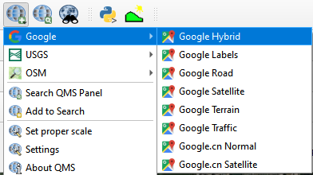
Make sure the Elevation Raster layer is checked on and if necessary change symbology to Hillshade.
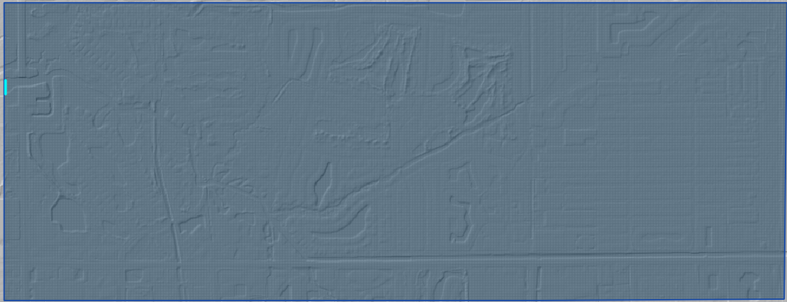
Step 2: Load the data#
Click the Project Data group.
Drag the channel shapefiles onto the map.
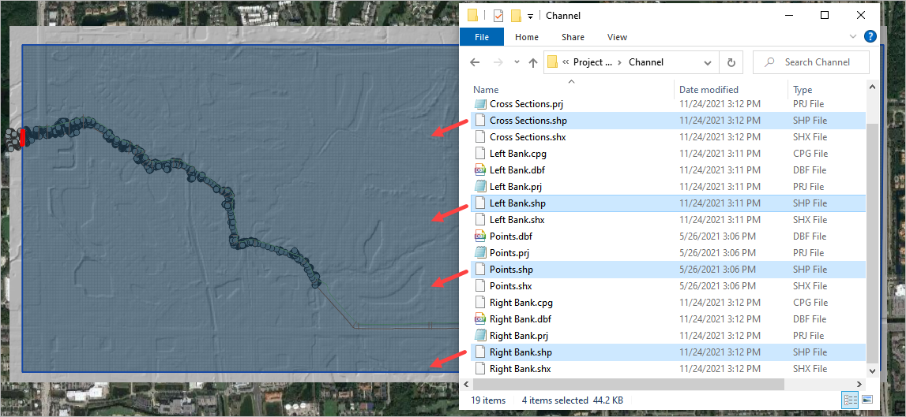
Step 3: Left bank digitize#
Go to the Project Data Group. Click the Left Bank layer.
Click the select features tool and drag the mouse over the channel to select the line.
Ctrl-C will copy the line.
Go to the User Layers Group. Click the Left Bank Lines.
Click the Edit Pencil button and Ctrl-V to paste the line into the Left Bank Lines layer.
Save the User Bank Lines layer and untoggle the Editor Pencil.
Watch the animated image for a demo.
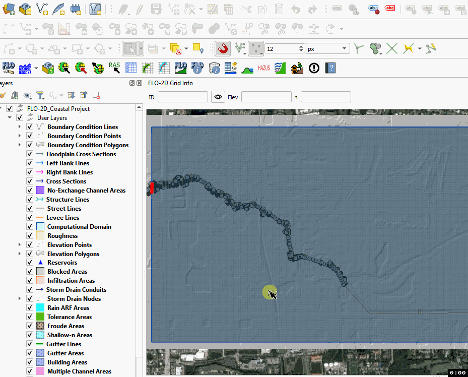
Step 4: Right bank digitize#
Go to the Project Data Group. Click the Right Bank layer.
Click the select features tool and drag the mouse over the channel to select the line.
Ctrl-C will copy the line.
Go to the User Layers Group. Click the Right Bank Lines.
Click the Edit button and Ctrl-V to paste the line into the Right Bank Lines layer.
Save the Right Bank Lines layer and untoggle the Editor Pencil.
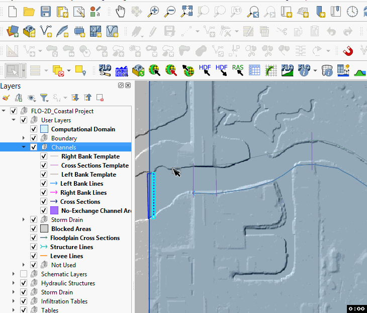
Step 5: Cross sections digitize#
Note
Digitize the cross sections in order from upstream to downstream.
Zoom in on the southeast corner of the map.
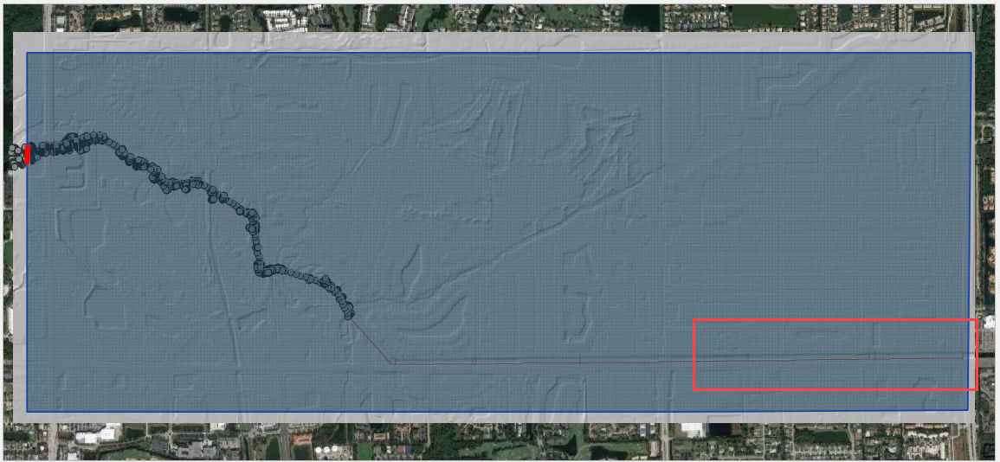
Uncheck the Grid layer in the Schematized Layers Group.
Go to the Project Data group and double click the Cross Sections layer.
Click Symbology and Click Simple Line. Set the color to red and the stroke width to 1. Click OK to close the window.
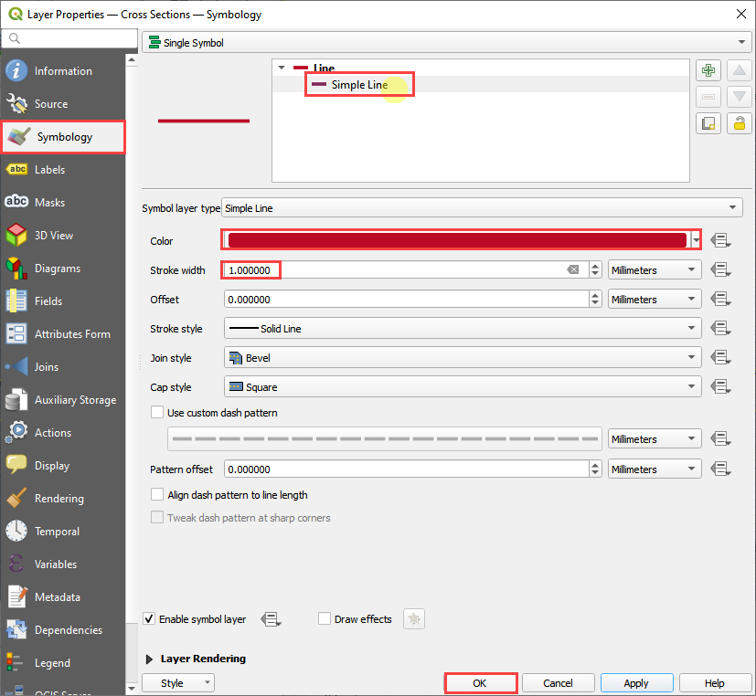
Add the Snapping toolbar. Right click the toolbar area and check the Snapping toolbar.
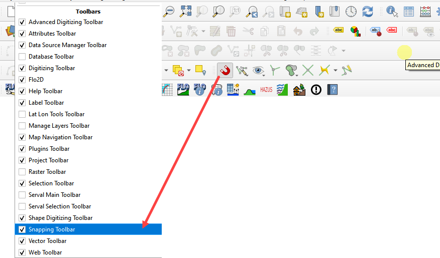
Click the eye tool and set the active layer to Cross Sections. Set the snapping group to Advanced.
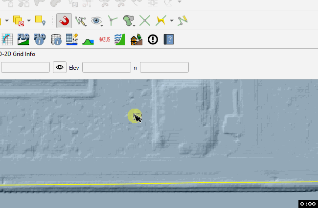
Collapse the FLO-2D widgets and click Cross Sections Editor.
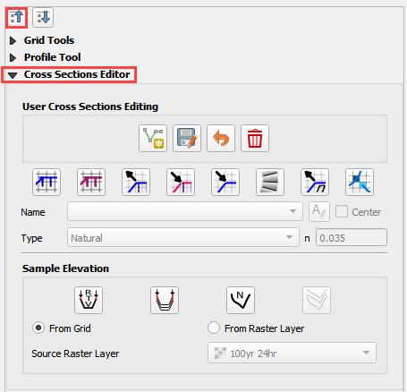
The first cross section has important restrictions.
The line must cross the left bank line
The line must start in the same cell as the left bank line.
The line must cross the right bank line.
The line must start in the same cell as the right bank line.
Click the Add Cross Section Lines button on the Cross Section Editor.
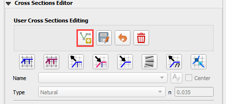
Digitize all 32 cross sections using process shown the following animation. Use the red lines as guides.
Left click the south side
Left click the north side
Right click to close
Click OK or use the Enter key to close attributes window
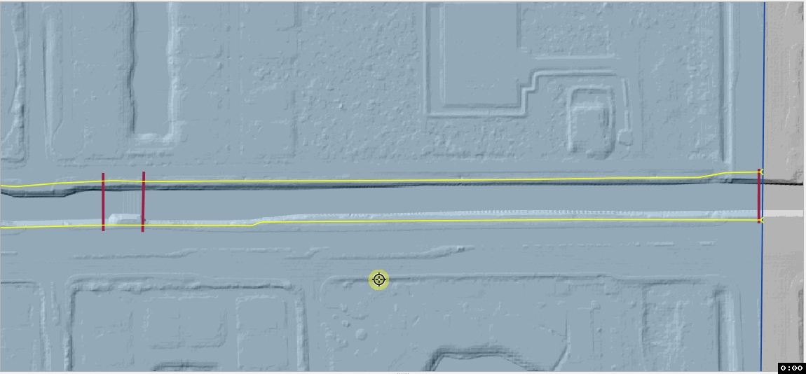
Handy digitizing features:
Left click to drop a point. Right click to close a polyline
Rotate the scroll wheel to zoom in and out.
Click and hold the scroll wheel to pan while in editing mode.
Use the delete key to delete the last point created.
Use the Esc key to cancel the polyline.
The point won’t drop until the mouse button is released.
Redo and undo have limited functionality and can be useful.
Once the last cross section is complete. Click the Save icon on the Cross Sections Editor.
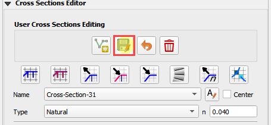
The final cross sections should look like something like this:
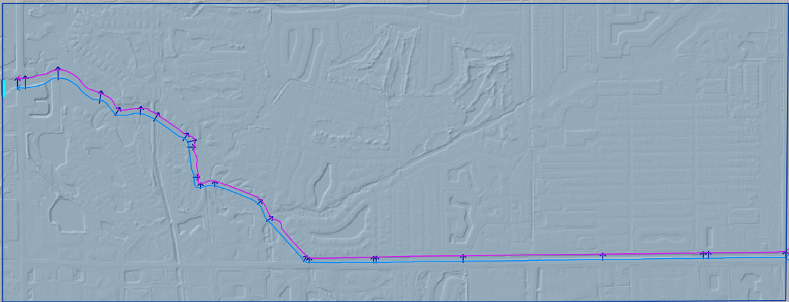
Step 6. Cross section attributes#
Go to the User layers group. Right click the Cross Sections layer and click Open Attribute Table.
Click the Edit pencil.
Set the field to fcn.
Set the n value to 0.03.
Click Update All.
Click Save button and turn off editor.
Close the table.
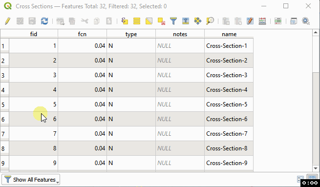
Methods to determine the channel geometry.
As-built files are the first source of data but not available in all cases.
Measure the width with QGIS measure tool.
Measure depth from elevation or site visit.
Measure side slope from elevation data or site visit.
Step 7: Load cross section data#
From the Cross Section Editor, choose Cross-Section-1.
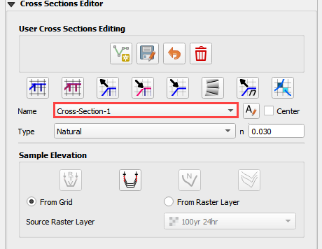
Open the corresponding cross section text file.
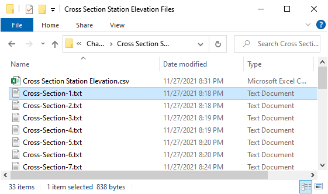
Data Location: \Coastal Training\Project Data\Channel\Cross Section Station Elevation Files
Copy the data and close the text file.
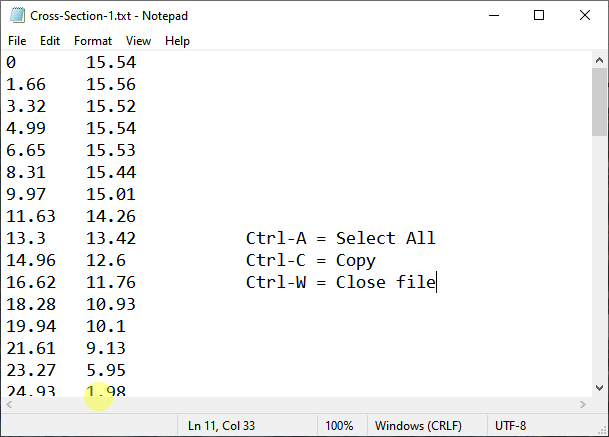
Click the first cell of the of the FLO-2D Table Editor and click the Paste button.
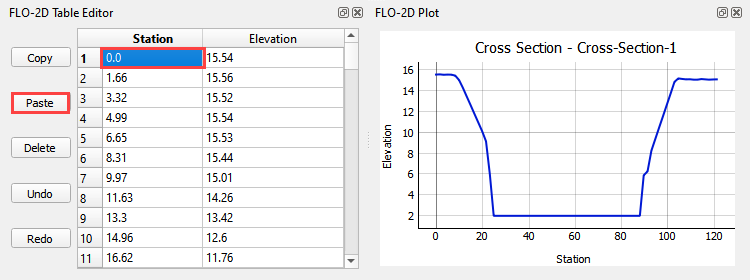
Repeat this process for all 32 cross sections.
Step 8: Schematize channel#
Note
If any of the following procedure needs to be repeated, always return to this Schematize step to reset the data before trying to modify anything.
Click Schematize channel.
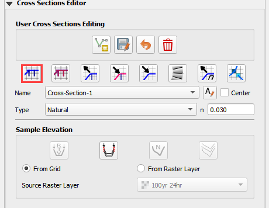
If the channel schematizing process was successful, the following messages will appear. Click Yes and Close.
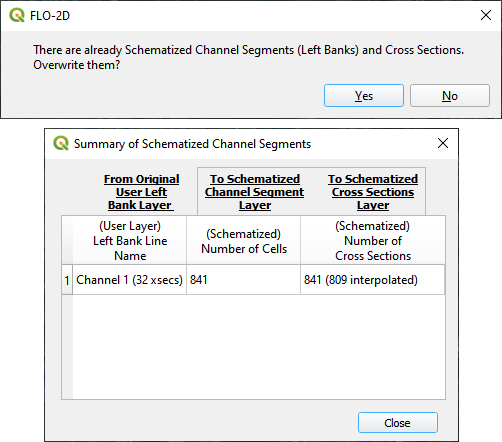
If an error message appears. Ask the instructor for help.
Step 9: Review bank alignment#
Channel alignment in urban projects can be important because channels are usually squeezed between features like buildings, walls, and streets. In this image, the right bank right along the houses. Recheck the banks after adding buildings.
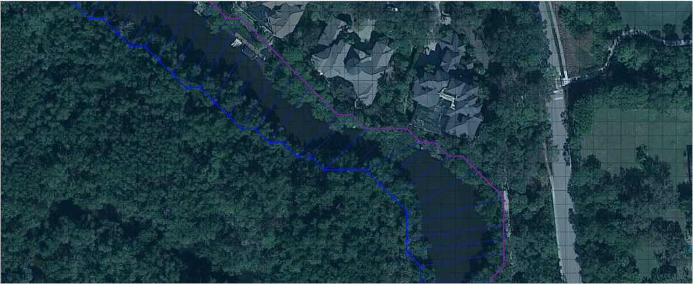
It is simple to make minor corrections to the left bank lines, right bank lines, and cross sections to realign the channels.
In the User Layers group, turn on the Editor Pencil for Left Bank Lines, Right Bank Lines, and Cross Sections.
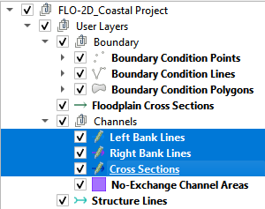
Set the Vertex Tool to All Layers.

Reposition the left or right bank so that it is better aligned with the right side of the channel.
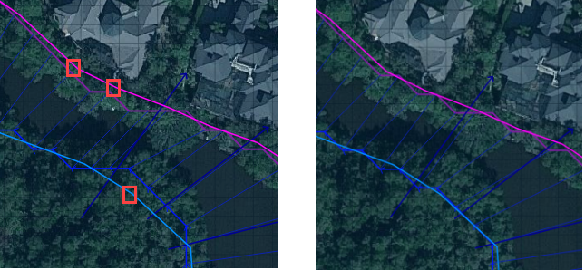
Click the Schematize button to adjust the Schematized Channel layers. Click Yes and Close to close the windows. In This case, hitting the enter button twice will be faster.

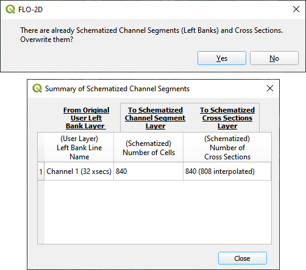
Always finish by clicking the schematize button to ensure the final edits were updated.
Once the final edits are complete, save and close the editors for the User Layers.
Step 10: Interpolate the channel#
N type channels are interpolated using the Interpolator.exe program. This method will outline how to call the interpolator and reload the data.
Note
If this process needs to be repeated for any reason, click Schematize button before performing this step.
Click the Create CHAN.DAT, XSEC.DAT, AND CHANBANK.DAT button.
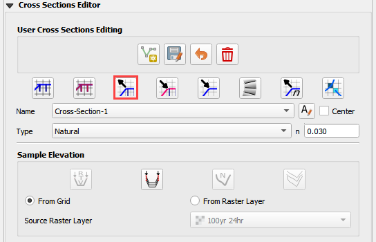
Select the folder where the *.DAT files will be saved.
Data Location: \Coastal Training\Project Data\Channel Interpolate Test
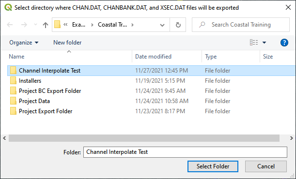
The first action saves the channel data. Click OK to close the message.
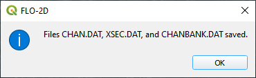
The second action calls the Interpolate.exe program from the FLO-2D Pro folder. Click Interpolate.
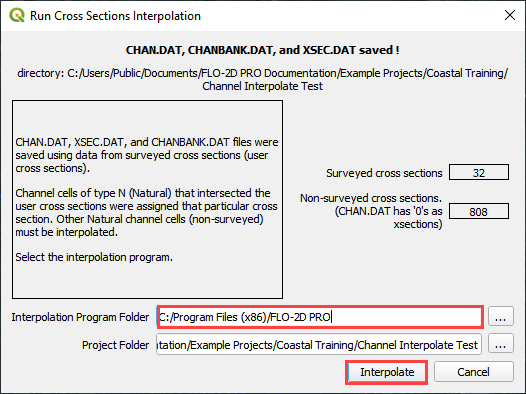
If the interpolation is performed correctly the following message will appear. Click Import CHAN.DAT and XSEC.DAT to update the channel data in QGIS.

Click the OK icon when the process is finished.

Step 11: Channel boundary condition#
Inlet#
Zoom to the first channel element on the southeast corner of the map.
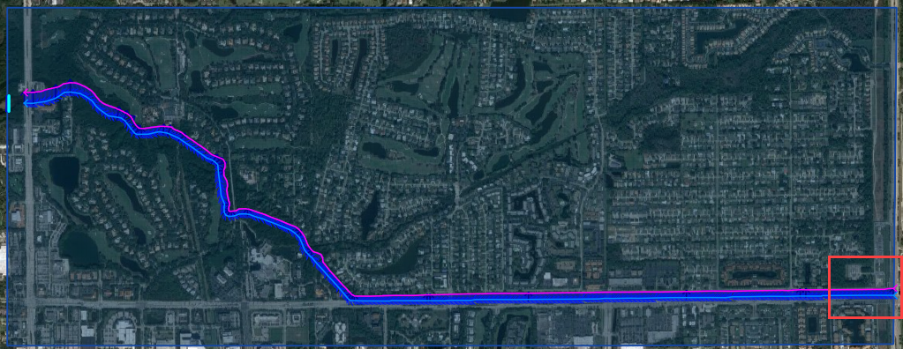
Uncheck the visibility of the User Layers Left Bank Lines, Right Bank Lines, Cross Sections.
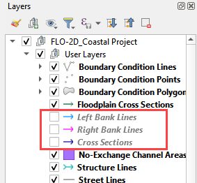
Collapse the FLO-2D Widgets and expand the Boundary Condition Editor.
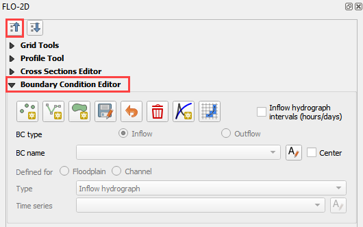
Click the Add point BC button, click the first left bank cell of the channel and click OK.
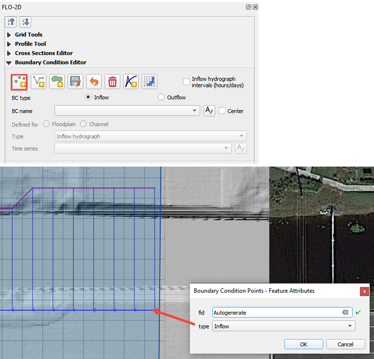
Click Save on the Widget and OK to close the message.
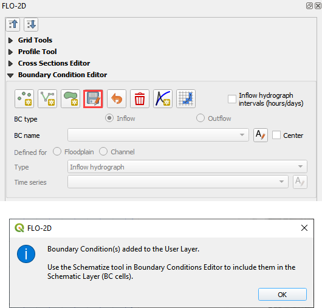
Change the BC name of the inflow to CocoIn
Set Defined to Channel
Name the new Time Series to 24hr100yr.
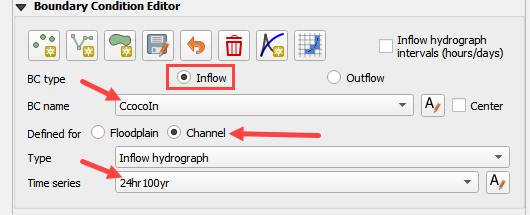
Open the hydrograph file in Notepad and copy the data.
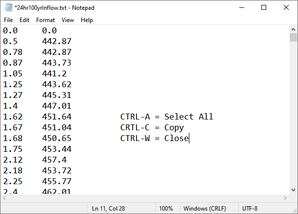
Data Location: \Coastal Training\Project Data\24hr100yrInflow.txt
Place the cursor in the first cell of the Table and click Paste.
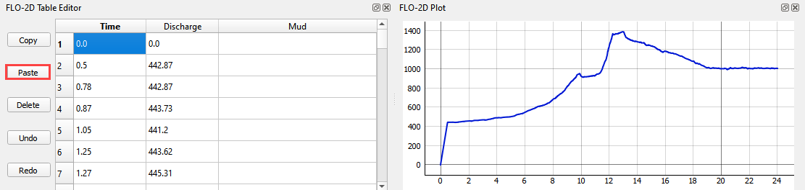
Click the Schematize button the outflow conditions and click OK to close the message.
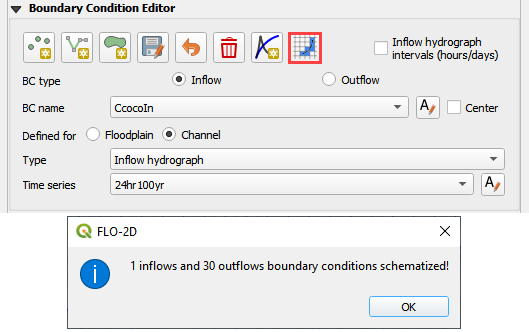
Outlet#
Zoom to the end of the channel.
Nothing is required in this location because the channel terminates upstream of the boundary. It will exchange water with the floodplain as the tide goes up and down.
The following image has is an overlay of the last cross section and the tide table.
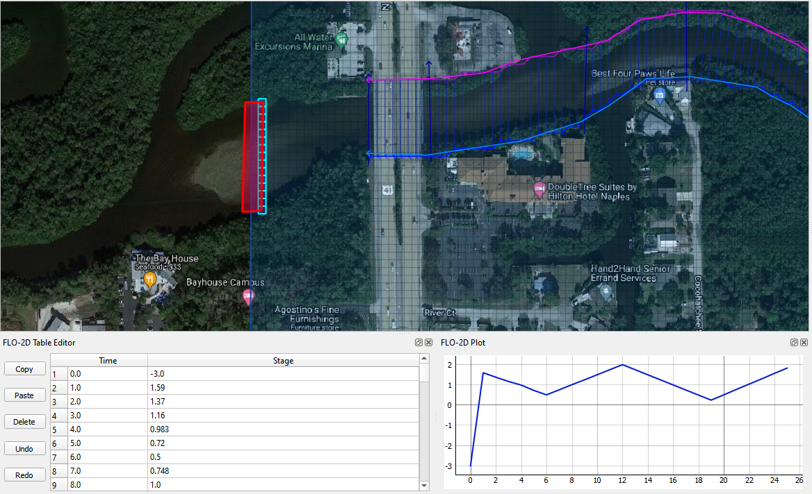
Step 12: Tide gates#
Two gated weirs are in the Cocohatchee canal.
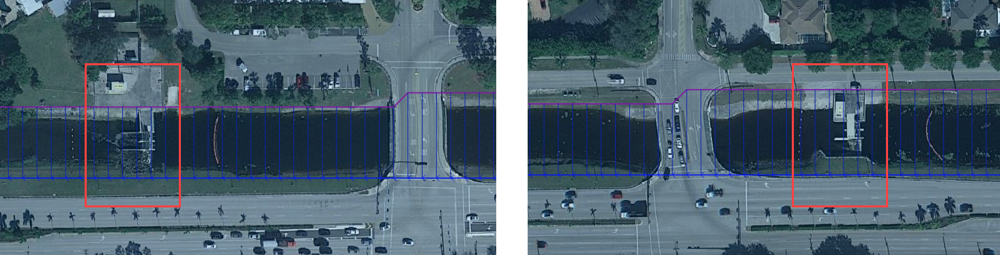
Zoom to the first tide gate COCO1 to the West.
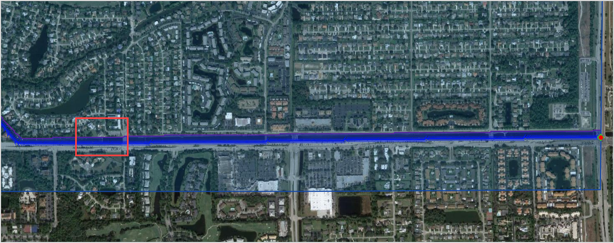
Collapse the FLO-2D widgets and click Structures Editor.
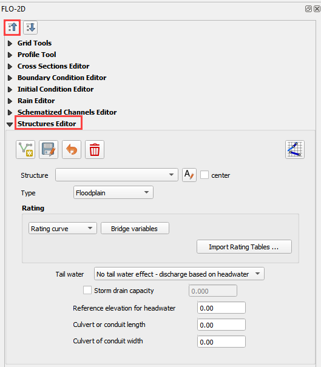
Digitize the first culvert by clicking on the upstream left bank element and downstream left bank element of the channel. Right click to complete the line and click OK to close the Structure Line attribute box.
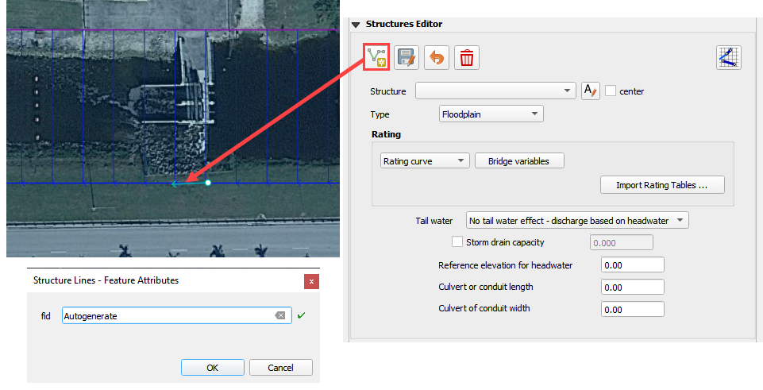
Move upstream to the East and create the second structure.
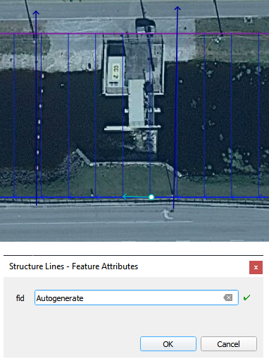
Click Save on the Structure Editor. Fill out the data for each structure.
Name the culverts Coco1, Coco2
Type = Channel
Rating = Rating table
Tailwater condition is Allow Upstream Flow.
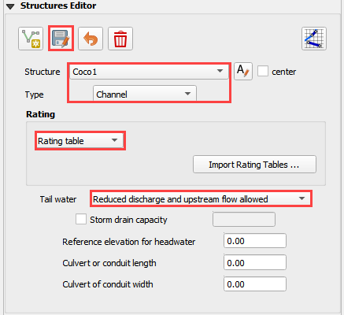
Click the Import Rating Tables button
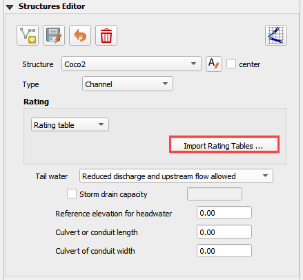
Navigate to the Rating Tables files, select both tables and click Open.
Data Location: Coastal Training\Project Data\Weirs
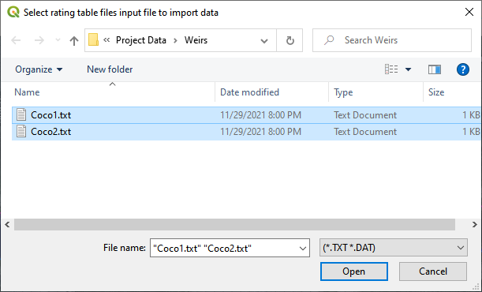
The data was loaded into the FLO-2D Table Editor for the active structure.
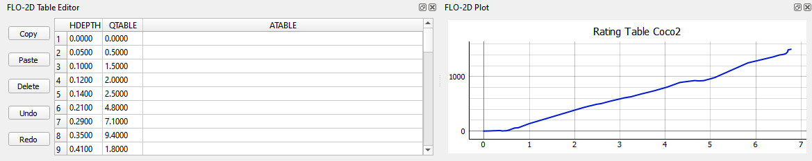
Click Schematize to write the data to the schematic layers.
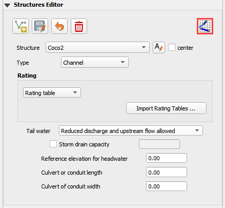
The hydraulic structures are now ready.
If the table and plot did not update, refresh the tables by selecting the structure again in the widget.
Step 13: Export the project#
Click the Setup Control Parameters icon.

Check the boxes for Main Channel and Hydraulic Structures and click Save.
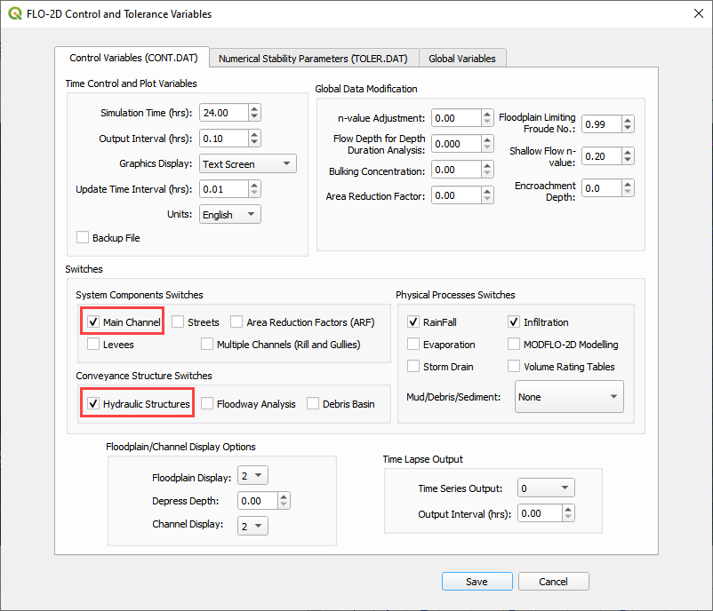
Click the Export button for the FLO-2D Data files. Click OK.
Create a new Export folder to test the weirs and channel hydraulics
The project is ready to run.
Step 14: Run the simulation#
Click the Run FLO-2D Icon.

Set the FLO-2D Folder. C:\program files (x86)\flo-2d pro
Set the Project Folder. \Coastal Training\Project Runs\Weir Test\
Click OK.
This is a good point to save project.

Step 15: Create a backup file#
Close QGIS.
Open the project folder. Select the Coastal Project.gpkg and Coastal Project.qgz files. Right click them and click Sent to/Compressed (zipped) folder.

Name the zipped file. It is good to choose a name that identifies project progress. For Example: ChanOK.zip
Open QGIS and reload the project.

Click yes to load the model.